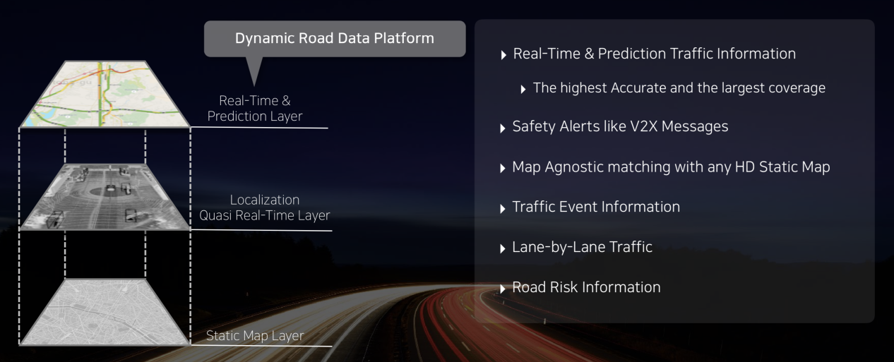
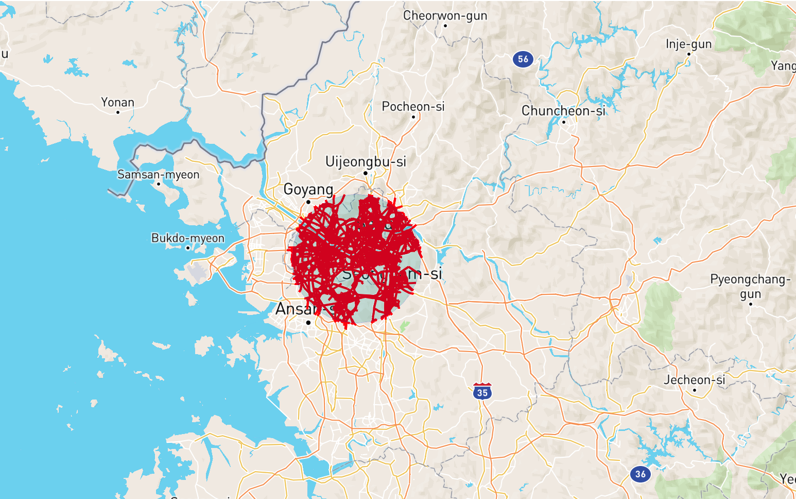
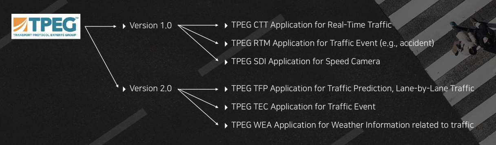
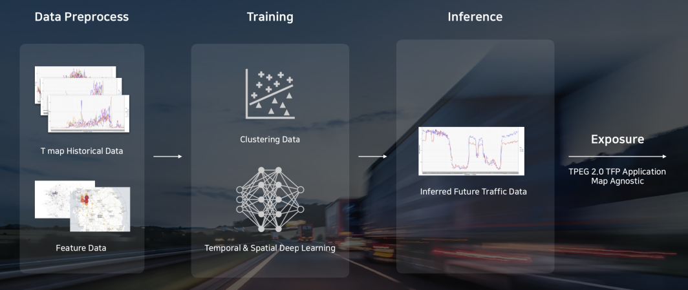

주요 기능¶
RUUT 는 SKT의 모빌리티 연관 서비스들의 데이터를 수집하여 아래와 같은 기능을 제공 합니다
교통 정보 제공¶
SKT T Map 과 연동하여 1800만 운전자의 실시간 운전정보 데이터를 제공 합니다. 실시간 교통 정보 데이터는 RUUT 전용 포맷 (JSON) 및 TPEG2 (Base64 Encoded XML, TPEG ML) 형태로 제공 되며 고객 리소스 최적화를 위하여 다양한 옵션 파라미터 조합을 제공합니다.
다양한 Geospatial Query¶
교통 정보 검색을 위하여 지리적 위치 범위에 대한 필터링을 제공합니다. 사용자는 필요한 지리적 영역의 형태 및 크기를 직접 입력하여 데이터 크기를 최적화하여 검색할 수 있습니다. 실제 자동차 네비게이션 산업에서 활용되고 있는 지리적 영역 필터링 형태 외에도 사용자 취향에 따른 필터 옵션을 제공하고 있습니다.
RUUT API 제공¶
RUUT 실시간 교통 정보는 JSON 포맷 형태로 제공 됩니다. 상세 포맷은 RUUT포맷 을 참조 하세요. 사용자는 표준화된 RESTful API 호출을 통하여 RUUT 실시간 교통 정보를 획득할 수 있습니다.
TPEG2 메시지 제공¶
최신의 교통 정보 전달 표준인 TPEG2 메시지를 제공합니다. TPEG2 에 대해서는 ISO 표준 사이트를 참조 하세요. RUUT 는 TPEG2 어플리케이션 중 TFP (실시간 교통 정보), TEC (실시간 사고 및 이벤트 정보), WEA (실시간 날씨 정보) 를 제공합니다.
예측 교통 정보 (FTI)¶
RUUT 는 다양한 교통 데이터를 통합 분석한 결과를 토대로 현재 시점부터 1시간 내의 교통 예측 정보를 제공합니다. 교통 예측 정보는 실시간 교통 정보 형태로 제공되며 정보의 제공 시간이 현재가 아닌 미래 시간으로 작성 됩니다.
V2X 서비스¶
T Map 을 통해 서비스 되고 있는 응급차량 접근 알림, 전방 급정거 알림 등의 SKT V2X 서비스를 T Map 이 아닌 경우에도 활용할 수 있도록 V2X 푸쉬 서비스를 제공합니다. Web hook 을 통해 연동된 엔터티 간 메시지 푸쉬를 통해 SKT V2X 서비스를 활용하실 수 있습니다.